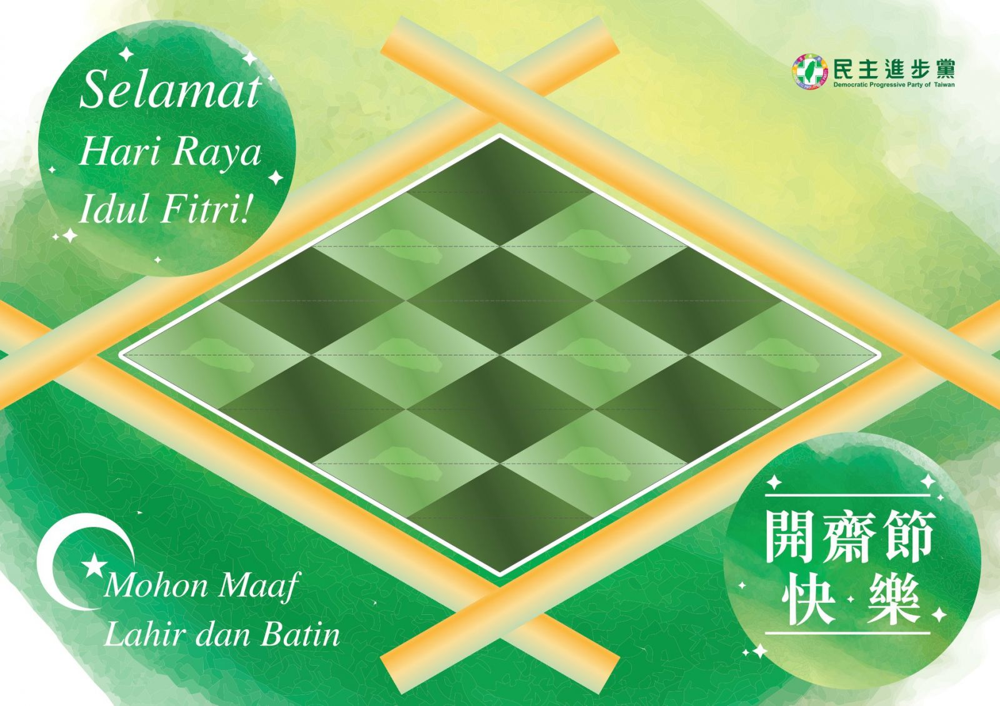

2019-06-05
虔誠齋戒月 歡慶開齋節
〞祝福所有穆斯林朋友，開齋節快樂！Selamat Hari Raya Idul Fitri,, Mohon Maaf Lahir dan Batin〞
自 5 月 7 日開始，台灣的穆斯林開始了最神聖的齋戒月，直至今日的開齋節，虔誠地完成了生命中一項重要的功課。 感謝所有為台灣付出的人們，並誠摯地祝福所有穆斯林朋友，開齋節快樂！ Selamat Hari Raya Idul Fitri, Mohon Maaf Lahir dan Batin.
為了慶祝功課圓滿，這次的祝賀圖別出心裁，把大家在開齋節享用的 Ketupat，變成象徵「生命和健康」且指引人生方向的綠色星月。希望這份心意，能成為穆斯林朋友家中應景的點綴。 擁抱多元，尊重宗教自由，是讓許多穆斯林朋友愛上台灣這塊土地的重要原因。民進黨將持續推動穆斯林友善環境，致力促進族群平等，讓生活在台灣的人都能夠安居樂業。 讓我們攜手，使台灣成為最溫暖的家。

摺紙連結下載：https://pse.is/F86KJ